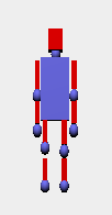
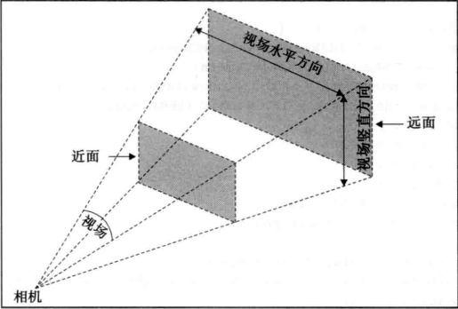

1.作机器人3D图
首先对将要作的机器人有个基本的设计，比如它的每一部分分别是由什么构成的，这里采取的设计是连接处使用球，其它部分
使用矩形或方形，以及对应几何体的大小大概是多少，之后发现有不对劲的地方，再对这些参数进行调节。
Three.js中构造球形、长方形的方式如下:
var sphereGeometry = new THREE.SphereGeometry(0.5, 10, 10);
var sphereMaterial = new THREE.MeshLambertMaterial({color: 0x7777ff});
var RightHand= new THREE.Mesh(sphereGeometry, sphereMaterial);
var cubeGeometry = new THREE.BoxGeometry(0.5, 2, 0.5);
var cubeMaterial = new THREE.MeshLambertMaterial({color: 0xff0000});
var LegL=new THREE.Mesh(cubeGeometry,cubeMaterial);
LegL.position.set(0,0,0);
最后作出的机器人正视图为：

2.让机器人动起来
平移旋转操作
首先对于行走这个动作，整个身体的每个部位都会随着向前移动，也就是除了局部的平移旋转之外，还必须有个额外的整体向前平移
的步长，如何设置这个平移的大小呢，我们必须控制处于机器人迈一步的状态时，头部等基本没有局部运动的部分处于前脚和后脚的中心直线上，
所以这里设置的步长大小为一只左脚（或右脚）迈出时向前迈的距离。
step=2*(2+0.5)*Math.sin(30*Math.PI/180);
function HeadBodyGo() {
var Head_tween=new TWEEN.Tween(Head.position);
Head_tween.to({x:StartPoint-step},1000);
var neck_tween=new TWEEN.Tween(neck.position);
neck_tween.to({x:StartPoint-step},1000);
var Body_tween=new TWEEN.Tween(Waist.position);
Body_tween.to({x:StartPoint-step},1000);
Head_tween.start();
neck_tween.start();
Body_tween.start();
}
之后就是一些局部运动的控制了：
腿部的运动类似于手肘的运动，这里重点解释手肘的局部运动。手肘分为三个部分(Arm1,Elbow,Arm2)，Arm2的运动是在Arm1的基础
上的，为了机器人不散架，首先我们是的Arm1，Elbow，Arm2先旋转一个角度Alpha1，之后Arm2在绕着Arm2的一段进行旋转Alpha2,再利用
Tween.js控制过程的连续性，就能完成运动。
Arm1R_tween_po.to({x:StartPoint-Math.cos(-sita)-step,y:Arm1_temp-Math.sin(-sita)},1000);
Arm1R_tween_ro.to({z:-sita},1000);
ElbowR_tween_po.to({x:StartPoint-2.5*Math.cos(-sita)-step,y:Elbow_temp-2.25*Math.sin(-sita)},1000);
Arm1L_tween_po.to({x:StartPoint+Math.cos(-sita)-step,y:Arm1_temp+Math.sin(-sita)},1000);
Arm1L_tween_ro.to({z:sita},1000);
ElbowL_tween_po.to({x:StartPoint+2.5*Math.cos(-sita)-step,y:Elbow_temp+2.25*Math.sin(-sita)},1000);
Arm2R_tween_po.to({x:StartPoint-4*Math.cos(-sita)-step,y:Arm2_temp-3*Math.sin(-sita)},1000);
Arm2R_tween_ro.to({z:-sita-10*Math.PI/180},1000);
HandR_tween_po.to({x:StartPoint-3.75*Math.cos(-sita)-step,y:Hand_temp-3.75*Math.sin(-sita)},1000);
Arm2L_tween_po.to({x:StartPoint+4*Math.cos(-sita)-step,y:Arm2_temp+3*Math.sin(-sita)},1000);
Arm2L_tween_ro.to({z:sita-10*Math.PI/180},1000);
HandL_tween_po.to({x:StartPoint+3.75*Math.cos(-sita)-step,y:Hand_temp+3.75*Math.sin(-sita)},1000);
让动作连续起来
这里使用的是tween.js来使得定义某个属性在两个值之间的过渡，使得运动的过程是连续的（tweening补间）
举个例子如下，下面这段代码是让Arm1R.position中的从当前的位置在1秒内移动到下列代码中对应的位置（其它旋转什么的类似）:
var Arm1R_tween_po=new TWEEN.Tween(Arm1R.position);
Arm1R_tween_po.to({x:StartPoint-Math.cos(-sita)-step,y:Arm1_temp-Math.sin(-sita)},1000);
控制运动
这里使用了一个全局变量count来计数，当count满足一定条件时迈左脚，摆右手，满足另一个条件时迈右脚，摆左手。
if(count%40==0)
{
console.log("LeftGo");
LeftGo();
}
else if(count%40==20)
{
//动作
console.log("RightGo");
RightGo();
}
requestAnimationFrame
这是three.js中用于制定一个函数，按照浏览器定义的间隔时间调用，浏览器会尽可能保证回话过程平滑、高效。这里我们就可以使得
把负责渲染的函数放进去，让动画持续进行，代码如下：
function renderScene() {
stats.update();
TWEEN.update();
...
requestAnimationFrame(renderScene);
renderer.render(scene,camera);
}
3.一些其他细节
视角调节
Three.js中视角用过设置视椎看向哪个方向来确定，可以类比于相机，如下图:

var camera = new THREE.PerspectiveCamera(45, window.innerWidth / window.innerHeight, 0.1, 1000);
camera.position.x = -25;
>camera.position.y = 40;
>camera.position.z = 30;
设置灯光以及阴影
var spotLight=new THREE.SpotLight(0xffffff);
spotLight.position.set(-60,60,-10);
spotLight.castShadow=true;
scene.add(spotLight);
Object.receiveShadow=true;
窗口Reload
当机器人快走出去的时候刷新一下窗口，使得又回到原来的位置继续移动
if(count==1800)
{
window.location.reload();
}
count++;